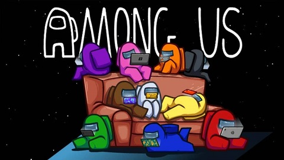

|  |
Among Us es un videojuego modo fiesta multijugador en línea desarrollado por compañía estadounidense InnerSloth, distribuido el 15 de junio de 2018 en las plataformas de Android e iOS, y meses posteriores para computadoras. La trama del juego trata sobre un grupo de tripulantes a bordo de una nave espacial que deben supervisar el adecuado funcionamiento del vehículo, al mismo tiempo que investigan a los «impostores» que intentan sabotear la nave y asesinarlos durante cada partida.9
Si bien salió al mercado inicialmente en 2018, su éxito se suscitó en 2020 (un par de años después de su aparición) en el mercado, que causó un auge en popularidad gracias a los vídeos publicados por streamers de Twitch y youtubers en los que se comparten partidas del juego. Como resultado, el 17 de septiembre de ese año se registraron más de 85 millones de descargas en dispositivos móviles. Según la empresa Sensor Tower, solo en Estados Unidos ha acumulado 20 millones de descargas y Brasil ha alcanzado cerca de 16 millones, sumadas a las casi 7 millones de México, entre estos tres países americanos sumaron más de la mitad en descargas.
En principio, la compañía había anunciado la secuela del juego, pero en respuesta al éxito del mismo, a finales de septiembre de ese año rechazaron esta opción y en cambio optó por mejorar la versión original.15 Durante el año 2020, inspiró memes de Internet por lo que captó un mayor número de seguidores en línea, solo en el periodo de agosto 2019 y agosto de 2020 creció un 661 % en descargas a nivel mundial. |